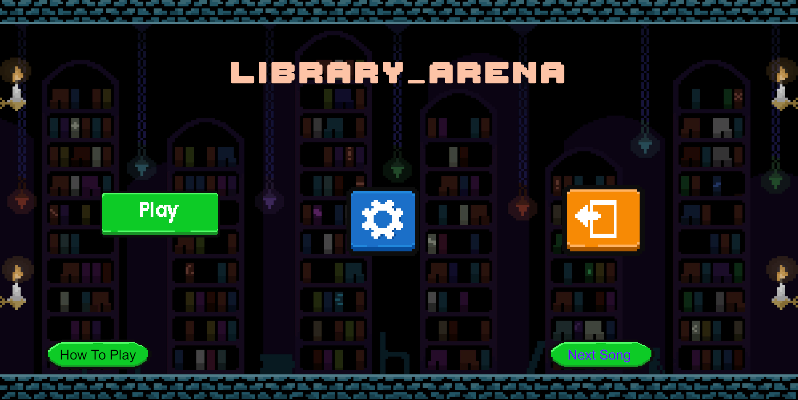
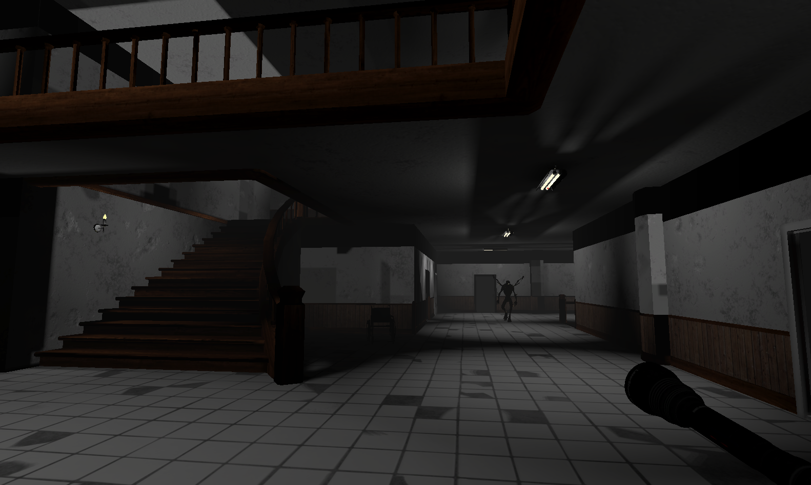

A collection of my game development work, prototypes, and programming projects.

Library Arena is a 2D wave-based survival arena game set inside a trapped library environment. The player must survive increasingly difficult waves of enemies while managing combat, health, and positioning. Each wave introduces stronger enemy types, culminating in a final boss battle at the last wave. The game also includes an Endless Mode and support items such as healing and defence-boosting books, increasing both strategy and replayability.
Engine
Unity
Genre
2D Wave Survival
Role
Game Developer
Rolly Polly Platformer is a 2D platformer made for the Game Studies ME3 project based on the theme “Out of Control.”
The game expresses the theme by using movement and environmental design. Instead of normal walking controls, the player controls a rolling character, making movement feel less stable and harder to fully control.
The player can only jump when their feet are touching a platform, adding timing and precision challenges. The core gameplay loop involves navigating difficult platform sections, avoiding spikes, and fake platforms that cause the player to fall.
Planned improvements include additional levels, sound effects, background music, UI polish, and a proper ending system.
Shadow Runner is a browser-based survival game built with HTML, CSS, and JavaScript. The player must survive as long as possible while being chased by AI enemies that continuously adapt and increase in difficulty over time.
Note: This game is only playable on PC or laptop devices (keyboard required).
Playable Version:

Asylum Escape is a first-person survival horror game set inside a dark abandoned asylum. The player is trapped inside while a hostile monster roams the halls, creating constant tension and danger.
The objective is to find the correct exit key hidden among multiple fake keys scattered throughout the map. Only one key is real, forcing the player to explore carefully while avoiding the monster at all costs.
This project focuses on tension, exploration, and survival mechanics within a 3D environment.
Small gameplay systems focusing on physics and interaction mechanics.
UI/UX practice using HTML, CSS, JavaScript and Bootstrap.